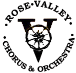
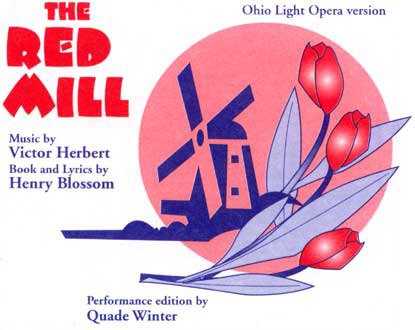

ABOUT US

The Rose Valley Chorus presented its first production, Gilbert & Sullivan's The Mikado, at the Artsman's Hall (now Hedgerow Theatre) in Rose Valley on November 21, 1907. This performance united the wealth of musical and dramatic talent resident in the arts and crafts colony of Rose Valley into a group that is still vibrant and successful 97 years (and 144 shows) later!
Today the Rose Valley Chorus and Orchestra draws its membership from the entire Delaware Valley, a result of its reputation for presenting professional-quality productions. The voices of the principals and chorus, with the musicianship of the full 35-piece orchestra, rank among the best of the area's many community musical theater groups.
Rose Valley now has two major productions each season (Fall and Spring) which includes Gilbert & Sullivan operettas, Broadway musicals, and other assorted operettas. Stage participation as a principal or chorus member is determined by audition. Audition dates are announced in Stage and local papers.
Current Season
|  |
April 28 & 29 and May 5 & 6, 2006 at 8:00 p.m.
April 29 and May 6, 2006 at 2:00 p.m.
Arnie Finkel - Stage Director Carol Freed - Music Director
Combine the antics of two impoverished American tourists stranded in a town in Holland with the complications surrounding several love matches all set to wonderful music--and you have a show to enjoy and tunes to remember.
- In Old New York
- Every Day is Ladies' Day With Me
- Because You're You!
- The Isle of Our Dreams Moonbeams
- When You're Pretty and the World is Fair
|